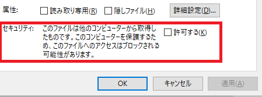
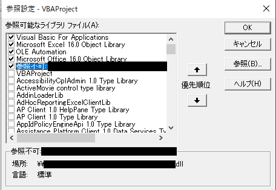
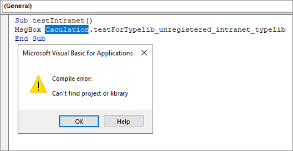
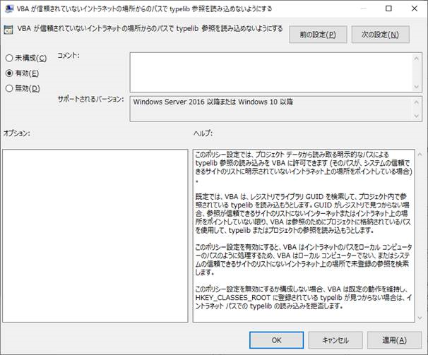
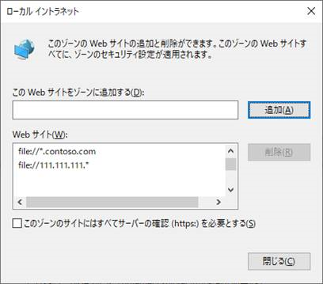
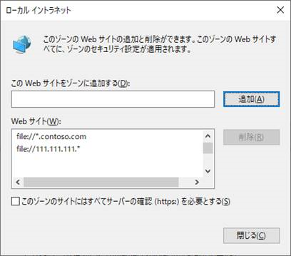
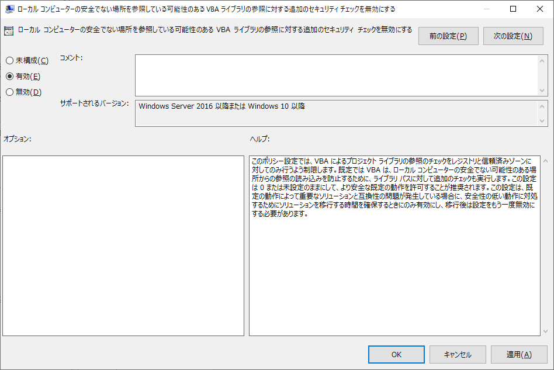

2020/10/16 Update
インターネットから入手したファイルへの参照を許可するグループポリシーの情報を追記しました。
こんにちは、Office 開発サポート チームの中村です。
2020 年 4 月 14 日 (米国時間) に公開されたセキュリティ更新の適用後に生じる問題として以下のサポート技術情報が公開されています。
2020年4月の Office セキュリティ更新プログラムによって影響を受ける VBA ソリューションについてよく寄せられる質問
https://support.microsoft.com/ja-jp/help/4557055
この内容について、更新の配信を管理する運用管理者からのお問い合わせをいくつか頂いています。本フォーラム記事では、上記のサポート技術情報の内容を VBA 開発者以外にも分かりやすいようご案内したいと思います。この記事をお読みいただくことで、影響を受けるファイルを適切に理解し、適用方針などの検討の一助となれば幸いです。
1. 変更の概要
KB4557055 で説明する問題は、以下のセキュリティ脆弱性への対応として VBA からの外部ライブラリ参照時のセキュリティ チェックが強化されたために発生します。(更新プログラムを公開するサポート技術情報では [既知の問題] セクションに記載があるため、製品の不具合と誤解される場合がありますが、意図した変更に伴い、お客様の VBA プログラムで生じ得る問題として案内しています。)
CVE-2020-0760 | Microsoft Office のリモート コードが実行される脆弱性
https://portal.msrc.microsoft.com/ja-jp/security-guidance/advisory/CVE-2020-0760
この CVE-2020-0760について説明する資料の [ソフトウェア更新] の一覧で記載されている製品にはこの変更が行われてるため、本記事で説明する現象が発生する可能性があります。(現在サポート対象の全ての Windows 向け Office 製品が該当します。) なお、Office Online や、iOS/Android 向けの Office アプリでは VBA は利用できないため、今回の動作変更の対象ではありません。Mac OS 向け Office も今回の変更は対象外となります。
VBA から Office のオブジェクト モデルで用意されたライブラリに含まれるプロパティやメソッドの他に、外部ライブラリを利用したい場合に、VBA からそのライブラリを参照して利用することがあります。
このとき、一般的には (ほとんどの場合は) ライブラリはregsvr32 の実行や、ライブラリ提供元で用意したインストーラによってクライアント PC に登録した上で利用します。この場合、Office VBA は登録された情報 (GUID) から、ライブラリの格納場所を特定して読み込みを行います。このシナリオは、今回の動作変更の影響を受けません。
一方で、クライアント PC にライブラリが登録されていない場合には、Office は次に、作成時のライブラリ参照パスを基にライブラリの読み込みを試みます。この参照パスからライブラリを読み込む動作において、今回のセキュリティ強化によって以下の場合はブロックされるように変更されました。
- \\server\folder\xxx.dllのような UNC 共有パスの参照
- インターネットからダウンロードされたライブラリ ファイルへの参照 (ファイルのプロパティで以下のような表示があるもの )

この変更でブロックされるのは、以下の種類のファイルへの参照です。
- タイプライブラリ (* olb, * .tlb, * .dll)
- 実行可能ファイル (* .exe)
- ActiveX コントロール (* .ocx)
2. 問題の詳細
今回の変更でライブラリ参照がブロックされると、その Office ファイルを開いて Visual Basic Editor の [ツール] – [参照設定] を開いたとき、以下のようにライブラリ名の前に “参照不可:” と表示されます。

また、この状態で [デバッグ] – [VBAProject のコンパイル] を実行したり、このマクロを有効にして自動的にコンパイルが実行されると、コンパイル エラーが発生します。

3. 問題に直面する可能性
1. でも触れた通り、外部ライブラリを参照する場合の一般的な構成としては、予めライブラリをクライアント PC に登録して利用します。登録されている場合は、登録情報 (GUID など) を基にライブラリを読み込みます。この場合はファイルの格納場所などに関わらず引き続き読み込むことができるため、ほとんどの VBA はこの問題に直面しません。
GUID による解決ができない場合のみが、今回の変更の影響を受けます。さらに、GUID で解決できなくとも、ライブラリをローカルに格納しており、インターネットから入手したとマークされていなければ影響はありません。プログラムから利用するライブラリをサーバー上から参照することも、あまり一般的には行わないかと思いますので、この動作変更の影響を受けるファイルは非常に限定されます。
4. 対応方法
利用状況に応じて、以下のいずれかの方法が検討できます。
4-1. VBA の参照設定を変更する
変更された後の動作でもライブラリが読み込まれるよう、以下のいずれかの変更を行います。
- regsvr32 やライブラリ提供元で用意しているインストーラを用いて、ライブラリをクライアント PC に登録します。
- 参照対象ライブラリをクライアント PC のローカル フォルダに格納し、参照設定からローカル パスを参照するよう変更します。
- 参照対象ライブラリの格納フォルダを Internet Explorer の信頼済みサイトとして登録します。(ローカル パスと同等の扱いとなります。)
- インターネットから入手したファイルとしてマークされている場合は、プロパティで [許可] を有効にして [OK] をクリックしてこのマークを外します。(かつ、ローカルに格納します。)

4-2. グループポリシーで動作を変更する
4-1. のような個別の対応が難しい場合には、新たに追加されたグループポリシーを設定することで、これまでのように読み込みを許可することができます。
以下で紹介する 2 つのポリシーを設定するためには、バージョン 5002.1000 以降の新しい管理用テンプレートを利用する必要があります。最新の管理用テンプレートは以下からダウンロードできます。
Administrative Template files (ADMX/ADML) and Office Customization Tool for Office 365 ProPlus, Office 2019, and Office 2016
https://www.microsoft.com/en-us/download/details.aspx?id=49030
※ 今回の項目は、Office 2016 / 2019 / 365 向けのテンプレートにのみ追加されています。ただし、今回のポリシーで設定されるレジストリはバージョンに依存しないキーのパスとなるため、Office 2010 や 2013 をご利用の環境でもこの Office 2016 / 2019 / 365 向け管理用テンプレートを導入して設定することができます。または、上記のレジストリを直接グループポリシーで配信してください。
イントラネットのファイルへの参照の場合
イントラネットに格納されたライブラリについては、以下のグループ ポリシーを設定します。ただし、イントラネットの UNC パスからの読み込みがすべて許可され、セキュリティ強度は低下しますので、問題のあるファイルをイントラネットに配置しないよう注意が必要です。
<グループポリシー項目>
[ユーザーの構成] – [Microsoft Office 2016] – [セキュリティ設定] – [VBA が信頼されていないイントラネットの場所からのパスで typelib 参照を読み込めないようにする]
<設定値>
有効

補足
このグループポリシーに対応する以下のレジストリを直接設定することもできます。
キー : HKEY_CURRENT_USER\Software\Policies\Microsoft\VBA\Security
名前 : AllowVbaIntranetReferences
種類 : REG_DWORD
値 : 1
イントラネットとみなされる条件
既定では、UNC パスの指定方法によって異なります。
\\Server\folder\xxx.dll : イントラネット
\\Server.contoso.com\folder\xxx.dll (FQDN 指定) : インターネット
\\111.111.111.111\folder\xxx.dll (IPアドレス指定) : インターネット
インターネットと認識されるパスは、上記のポリシーを設定してもライブラリは読み込まれません。これらのパスをイントラネットと認識させるためには、Internet Explorer の [設定] (歯車のマーク) – [インターネット オプション] – [セキュリティ] タブで [ローカル イントラネット] を選択して [サイト] をクリックし、[詳細設定] から対象の FQDN や IP アドレスを追加します。(ワイルドカード指定可能です。)
※ UNC パスを登録するには、下部の [このゾーンのサイトにはすべてサーバーの確認 (https:) を必要とする] を無効にする必要があります。
 

インターネットから入手したファイルとしてマークされているファイルへの参照の場合
システム構成やインストールの手順上、ライブラリ ファイルがインターネットから入手したファイルとしてマークされるシナリオでは、以下のグループ ポリシーを設定します。ただし、あらゆるインターネットから入手したファイルとしてマークされているライブラリ ファイルへの参照が許可されますので、セキュリティ リスクを十分考慮の上設定してください。
<グループポリシー項目>
[ユーザーの構成] – [Microsoft Office 2016] – [セキュリティ設定] – [ローカル コンピューターの安全でない場所を参照している可能性のある VBA ライブラリの参照に対する追加のセキュリティ チェックを無効にする]
<設定値>
有効

補足
このグループポリシーに対応する以下のレジストリを直接設定することもできます。
キー : HKEY_CURRENT_USER\Software\Policies\Microsoft\VBA\Security
名前 : DisableStrictVbaRefsSecurity
種類 : REG_DWORD
値 : 1
今回の投稿は以上です。
本情報の内容 (添付文書、リンク先などを含む) は、作成日時点でのものであり、予告なく変更される場合があります。